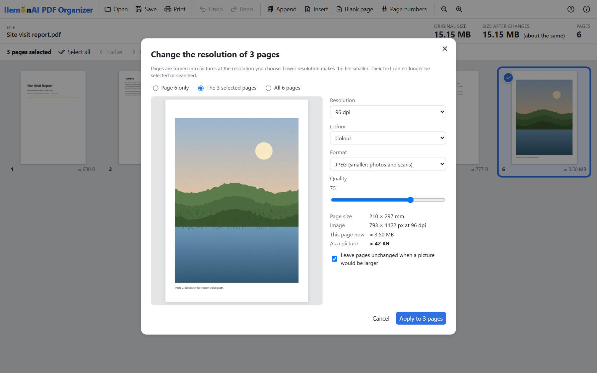
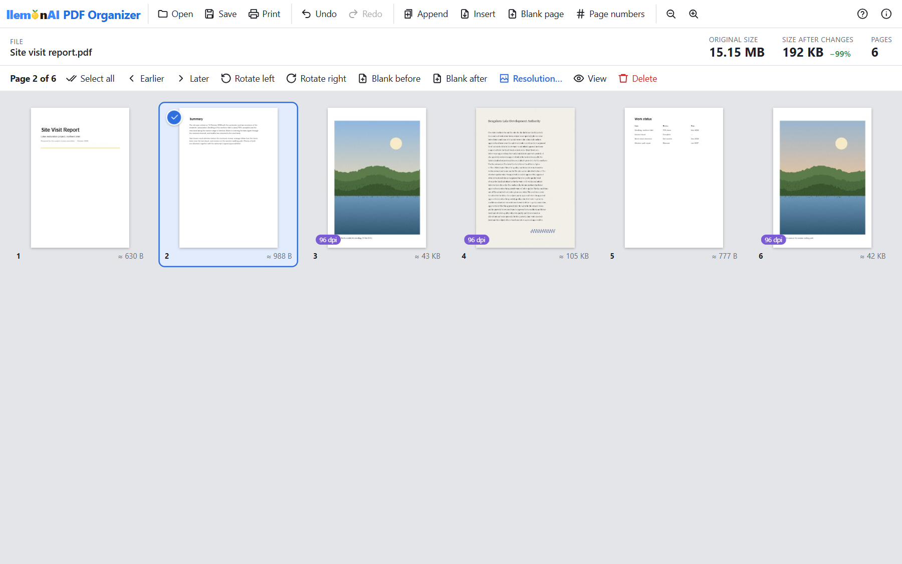
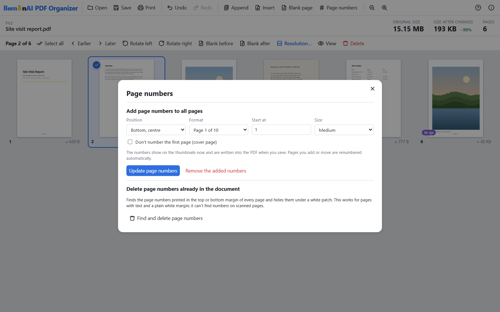
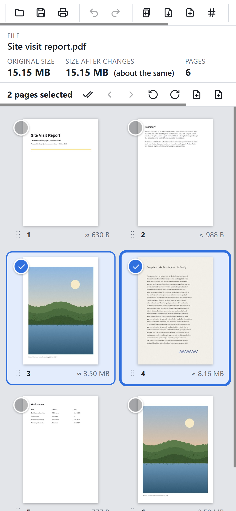

Add or delete page numbers
Number every page as "Page 1 of 10", "1 / 10" and more, in six positions, skipping the cover if you like. Or find and remove the numbers already in a document.
Free · Windows, macOS and Android · version 1.5.1 · works offline
Most PDF compressors squeeze the whole file at one setting. llemonAI PDF Shrinker lets you choose the resolution for each page: shrink the photos and scans that make a file too big to email or upload, and leave text pages exactly as they are.
Windows 10/11: one portable .exe, no installer · macOS 12 or later, Apple Silicon and Intel · Android 8.0 or later

Page-by-page resolution
A report with a few photos and a scanned letter can easily reach 15 MB, almost all of it in three pages. Shrinking the whole file blurs every page. Shrinking only those three doesn't.
Typical compressors apply one quality level to every page. To get the photos small enough, the text pages become pictures too: they blur, can't be searched, and some even get bigger.
Every thumbnail shows that page's share of the file size, so you can see which pages make it big. Select them, pick a resolution, and only those pages change. Text pages stay sharp, searchable and small.


Features
For applications, reports, study material and scanned paperwork, and getting them under the upload limit.
Number every page as "Page 1 of 10", "1 / 10" and more, in six positions, skipping the cover if you like. Or find and remove the numbers already in a document.

The original size, the size after your changes, and each page's share of the file, as you work.
Drag pages into a new order, rotate them, add blank pages, delete one page or a whole selection. Undo and redo everything.
Append or insert PDF, Word (.docx and old .doc) and .txt files. Kannada, Hindi, Tamil and other scripts show correctly.
Print the document exactly as it will be saved: new order, rotations and page numbers included.
Everything happens on your device. No account, no upload, no internet connection needed.
About → Check for updates installs a new version after checking its checksum.
Android
Tap the ✓ on each page to pick the ones to shrink, then change their resolution, reorder or add page numbers, all on the phone.

Download
Not sure which Windows file? Almost every PC made since 2010 is 64-bit.
New in 1.5.1 (7 Nov 2026): the Mac app for Apple Silicon and Intel, and Check for updates with one-click install in About, plus a list of what's new in each version.
The app itself is still named llemonAI PDF Organizer, as are the download files; it gets the new name in a coming update.
The Mac app isn't notarized by Apple (that needs a paid Apple developer account), so macOS blocks it the first time you open it. You only have to allow it once:
After that it opens normally with a double-click, and updates installed from About → Check for updates open without asking again. The warning doesn't mean anything was found in the app; you can confirm your download is genuine with its SHA256 checksum.
On macOS 12–14 you can also right-click (or Control-click) the app in Applications, choose Open, then Open again.
Or, in Terminal, remove the “downloaded from the internet” mark (one time): xattr -dr com.apple.quarantine "/Applications/llemonAI PDF Organizer.app"
To check a download, run certutil -hashfile llemonAI-PDF-Organizer-1.5.1-win-x64.exe SHA256 on Windows or shasum -a 256 llemonAI-PDF-Organizer-1.5.1-macos.dmg on a Mac, and compare it with the checksum above. The files are signed with llemonai's own certificates, not a public authority, so Windows SmartScreen may say "Unknown Publisher" and Android may ask you to allow installs from this source. Both are expected.
Good to know
| Your files stay on your device | Documents are opened, changed and saved locally. Nothing is uploaded, and no internet connection is needed. The app only goes online when you click Check for updates. |
|---|---|
| Updates | About → Check for updates installs a newer version after checking its SHA256 checksum. Windows and macOS restart on the new version; Android opens its installer. |
| Which pages get smaller | Pages with photos, scans or heavy drawings shrink a lot. A page of ordinary text is already smaller than any picture of it, so the app warns you and, by default, leaves it unchanged. |
| Changed pages | A page with a new resolution becomes a picture: its text can no longer be selected or searched. Pages you don't select are not touched. |
| Word and text files | .docx keeps headings, bold and italic, lists, tables and pictures; old Word 97–2003 .doc files keep their text; .txt keeps its line layout. |
| Deleting page numbers | Numbers printed in the page margins are found and covered with white. Works best on white margins; numbers on scanned pages can't be detected. |
| Encrypted PDFs | Password-protected PDFs can't be organized. |
| Shortcuts | Ctrl+O open · Ctrl+S save · Ctrl+P print · Ctrl+A select all · Ctrl+Z undo · F1 help (⌘ on a Mac) |